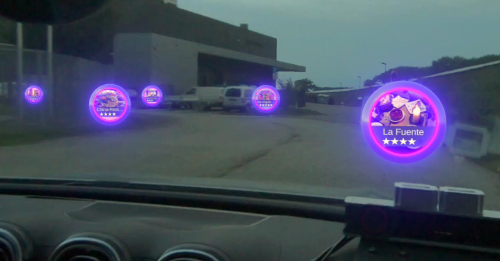
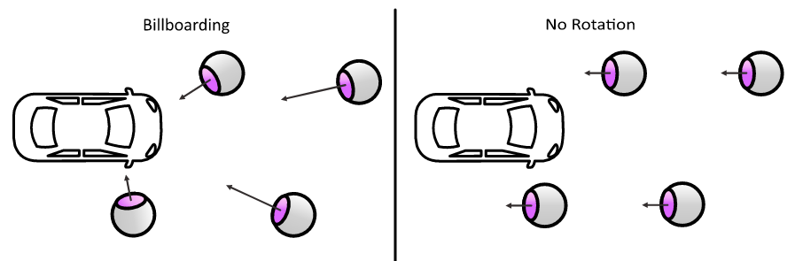
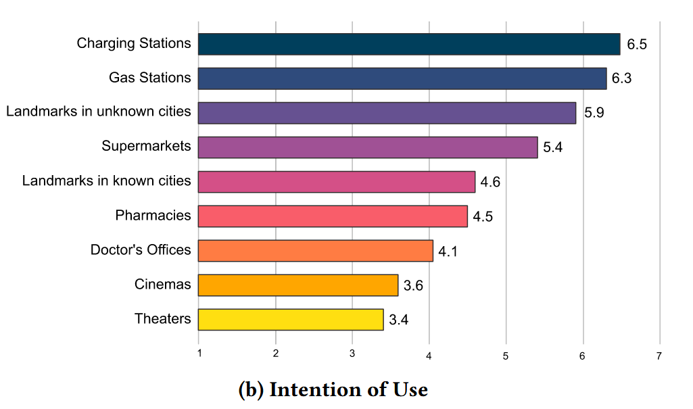

Blending the Worlds
An Evaluation of World-Fixed Visual Appearances in Automotive Augmented Reality
CHI'25
TL;DR: We evaluate how six world-fixed AR appearance parameters shape user preferences and acceptance in moving vehicles, and derive design guidance for automotive AR points of interest.
Abstract
With the transition to fully autonomous vehicles, non-driving related tasks (NDRTs) become increasingly important. In-car AR gives passengers the possibility to engage with their surroundings via world-fixed POIs. We conducted a field study (N=38) examining six visualization parameters: positioning, scaling, rotation, render distance, information density, and appearance. Our findings reveal user preferences and general acceptance of AR functionality, and we derived UX guidelines for POI visualization in in-car AR.


